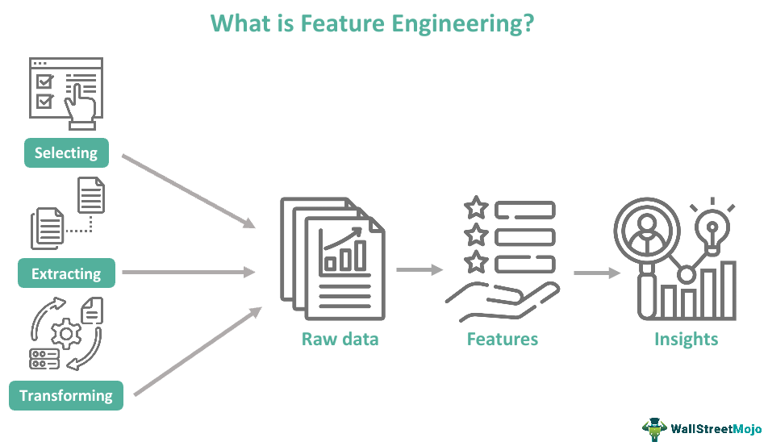

Limpieza & Transformación
Limpieza & Transformación corrige errores y unifica formatos. Manejo de nulos y outliers mejora la calidad de los datos. ETL/ELT automatiza pipelines para mover y procesar datos. Feature Engineering crea variables clave para modelos de ML.
Aristóteles y la lógica formal
Aristóteles fue uno de los primeros en intentar sistematizar el razonamiento humano mediante reglas lógicas. Sus ideas inspiraron siglos después el concepto de razonamiento computacional.

Leibniz y el cálculo lógico
Gottfried Wilhelm Leibniz soñó con crear una “máquina de razonamiento” que pudiera realizar deducciones lógicas, anticipando la noción de una computadora simbólica.

George Boole y el álgebra booleana
Boole formalizó la lógica con operaciones matemáticas que más tarde permitirían el desarrollo de circuitos digitales y lenguajes de programación.

Feature Engineering
El Feature Engineering es el proceso de transformar y crear variables (features) a partir de datos brutos para mejorar el rendimiento de un modelo de Machine Learning. Incluye seleccionar, modificar o generar características relevantes que ayuden al modelo a aprender patrones de forma más precisa.
“Podemos considerar que el razonamiento es una forma de cálculo.” — Leibniz